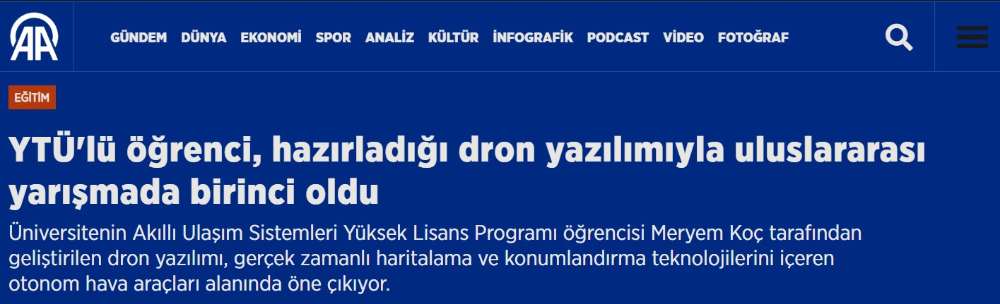

YTÜ'lü öğrenci, hazırladığı dron yazılımıyla uluslararası yarışmada birinci oldu
Kurucumuz ve Yıldız Teknik Üniversitesi (YTÜ) öğrencisi Meryem Koç, Portekiz'de düzenlenen "Shift Appens" yarışmasında, geliştirdiği otonom dron yazılımıyla rakiplerini geride bırakarak birincilik ödülüne layık görüldü.
Anadolu Ajansı'nın (AA) haberine göre; YTÜ Akıllı Ulaşım Sistemleri Yüksek Lisans Programı öğrencisi Meryem Koç, Deptron Robotics ekibiyle birlikte geliştirdiği projede, depo yönetim sistemlerinde devrim yaratacak bir çözüm sundu.
GPS Olmadan Otonom Uçuş
Yarışma kapsamında geliştirilen yazılım, dronların kapalı alanlarda (depolarda) GPS sinyaline ihtiyaç duymadan otonom olarak hareket etmesini sağlıyor. Görüntü işleme teknolojisi kullanılarak geliştirilen sistem, raflardaki stokları otomatik olarak sayabiliyor ve verileri anlık olarak depo yönetim paneline aktarıyor.
- AA Haberinden Alıntı
48 Saatte Gelen Zafer
Portekiz'in Coimbra kentinde düzenlenen ve Avrupa'nın en prestijli teknoloji etkinliklerinden biri olan Shift Appens'ta, katılımcılardan 48 saat içinde işlevsel bir ürün ortaya koymaları istendi. Ekibimiz, kısıtlı sürede geliştirdiği "En İyi Otonom Çözüm" ile jüri üyelerinden tam not alırken, aynı zamanda diğer katılımcıların oylarıyla "Halkın Favorisi" seçildi.
Sektöre Katkısı
Geliştirilen bu teknoloji, Deptron Robotics'in sunduğu otonom depo çözümlerinin (AMR) havadan desteklenen versiyonu olarak nitelendiriliyor. Bu başarı, Türk mühendisliğinin otonom sistemler ve yapay zeka alanındaki yetkinliğini uluslararası arenada bir kez daha kanıtlamış oldu.
Haberin detaylarına aşağıdaki bağlantıdan ulaşabilirsiniz.